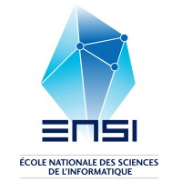
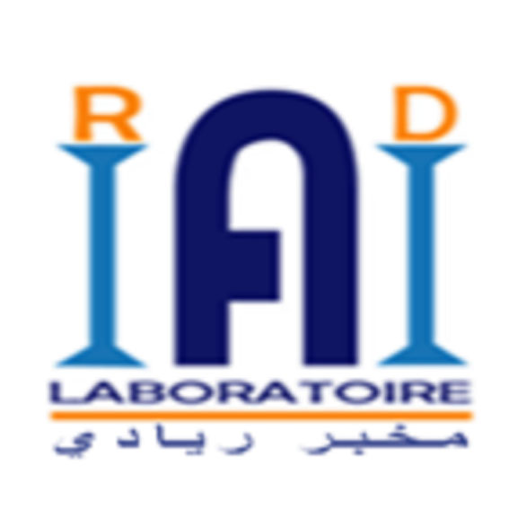
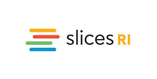
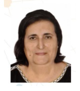
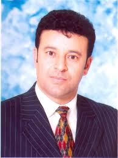
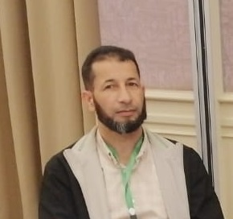
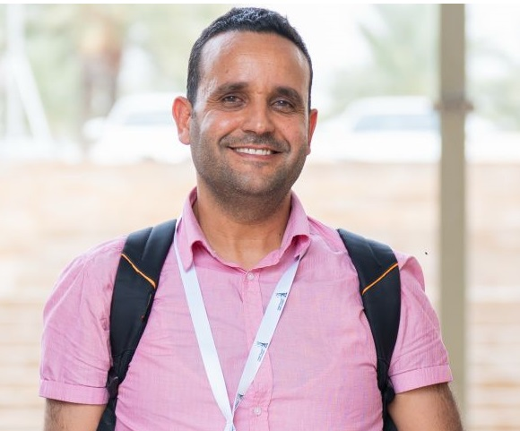

A series of scientific activities, training sessions, and hands-on workshops bringing together researchers, academics, doctoral students, and innovators around key topics in 5G networking and social network analysis.
Two parallel workshops are offered, specifically dedicated to PhD and doctoral students:



A full-day program covering 5G network deployment with SLICES-RI and epistemic enclave detection with SoBigData tools.
CDlib, NDlib, YSocial for network analysis — OpenAirInterface, Docker, and SLICES-RI for 5G experimentation.
Two 6-hour sessions combining theory and hands-on practice, with coffee breaks and a lunch break included.
Intermediate Python and Linux knowledge recommended. Preconfigured environments provided on both platforms — no complex setup required.
Two parallel tracks, each 6 hours, combining theory and extensive hands-on practice on real infrastructures.
Hands-on tutorial covering 5G architecture, Docker-based deployment, and measurement workflows on the SLICES-RI infrastructure.
Identifying Epistemic Enclaves and Understanding Polarisation. By Giulio Rossetti (CNR-ISTI) and Andrea Failla (Italian National PhD Program in AI).
Both workshops follow the same schedule — a structured full day maximizing hands-on practice.
Everything you need to know about registering and attending the Summer School.
For inquiries: DigitAfrica-ENSI@ensi-uma.tn




Register now to secure your place in the DIGIT Africa Summer School 2026. Seats are limited and confirmed after review. The detailed programs are available below.